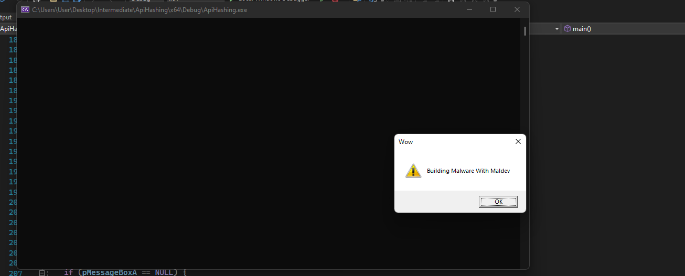
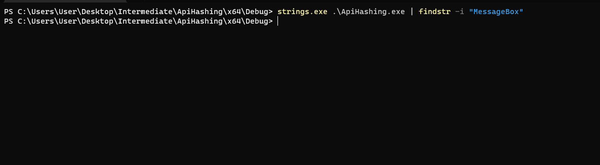

Introduction
In the previous two modules, two custom functions were created GetProcAddressReplacement and GetModuleHandleReplacement which replaced GetProcAddress and GetModuleHandle. This was sufficient for performing Run-Time Dynamic Linking which hides the imported functions from the IAT. However, the strings used within the code reveal which functions are being used. For example, the line below uses the functions to retrieve VirtualAllocEx.
GetProcAddressReplacement(GetModuleHandleReplacement("ntdll.dll"),"VirtualAllocEx")Security solutions can easily retrieve the strings within the compiled binary and recognize that VirtualAllocEx is being used. To solve this problem, a string hashing algorithm will be applied to both GetProcAddressReplacement and GetModuleHandleReplacement. Instead of performing string comparisons to acquire the specified module base address or function address, the functions will work with hash values instead.
Implementing JenkinsOneAtATime32Bit
The GetProcAddressReplacement and GetModuleHandleReplacement functions are renamed in this module to GetProcAddressH and GetModuleHandleH, respectively. These updated functions utilize the Jenkins One At A Time string hashing algorithm to replace the function and module name with a hash value that represents them. Recall that this algorithm was utilized through the JenkinsOneAtATime32Bit function that was introduced in the String Hashing module.
Hashing Strings
In order to use the functions shown in this module, it is necessary to obtain the hash value of a module name (e.g. User32.dll) and the hash value of the function name (e.g. MessageBoxA). This can be done by first printing the hashed values to the console. Ensure that the hashing algorithm uses the same seed.
// ...
int main(){
printf("[i] Hash Of \"%s\" Is : 0x%0.8X \n", "USER32.DLL", HASHA("USER32.DLL")); // Capitalized module name
printf("[i] Hash Of \"%s\" Is : 0x%0.8X \n", "MessageBoxA", HASHA("MessageBoxA"));
return 0;
}The above main function will output the following:
[i] Hash Of "USER32.DLL" Is : 0x81E3778E
[i] Hash Of "MessageBoxA" Is : 0xF10E27CAThese hash values can now be used with the functions below.
Usage
The functions would be used the same way except now the hash value is passed rather than the string value.
// 0x81E3778E is the hash of USER32.DLL
// 0xF10E27CA is the hash of MessageBoxA
fnMessageBoxA pMessageBoxA = GetProcAddressH(GetModuleHandleH(0x81E3778E),0xF10E27CA);GetProcAddressH Function
GetProcAddressH is a function that is equivalent to GetProcAddressReplacement with the main difference being that the hash values of the JenkinsOneAtATime32Bit string hashing algorithm are employed to compare the exported function names to the input hash.
It's also worth noting that the code uses two macros to make the code cleaner and easier to update in the future.
HASHA - Calling HashStringJenkinsOneAtATime32BitA (ASCII)HASHW - Calling HashStringJenkinsOneAtATime32BitW (UNICODE)#define HASHA(API) (HashStringJenkinsOneAtATime32BitA((PCHAR) API))#define HASHW(API) (HashStringJenkinsOneAtATime32BitW((PWCHAR) API))With that in mind, the GetProcAddressH is shown below. The function takes two parameters:
hModule - A handle to the DLL module that contains the function.dwApiNameHash - The hash value of the function name to get the address of.FARPROC GetProcAddressH(HMODULE hModule, DWORD dwApiNameHash) {
if (hModule == NULL || dwApiNameHash == NULL)
return NULL;
PBYTE pBase = (PBYTE)hModule;
PIMAGE_DOS_HEADER pImgDosHdr = (PIMAGE_DOS_HEADER)pBase;
if (pImgDosHdr->e_magic != IMAGE_DOS_SIGNATURE)
return NULL;
PIMAGE_NT_HEADERS pImgNtHdrs = (PIMAGE_NT_HEADERS)(pBase + pImgDosHdr->e_lfanew);
if (pImgNtHdrs->Signature != IMAGE_NT_SIGNATURE)
return NULL;
IMAGE_OPTIONAL_HEADER ImgOptHdr = pImgNtHdrs->OptionalHeader;
PIMAGE_EXPORT_DIRECTORY pImgExportDir = (PIMAGE_EXPORT_DIRECTORY)(pBase + ImgOptHdr.DataDirectory[IMAGE_DIRECTORY_ENTRY_EXPORT].VirtualAddress);
PDWORD FunctionNameArray = (PDWORD)(pBase + pImgExportDir->AddressOfNames);
PDWORD FunctionAddressArray = (PDWORD)(pBase + pImgExportDir->AddressOfFunctions);
PWORD FunctionOrdinalArray = (PWORD)(pBase + pImgExportDir->AddressOfNameOrdinals);
for (DWORD i = 0; i < pImgExportDir->NumberOfFunctions; i++) {
CHAR* pFunctionName = (CHAR*)(pBase + FunctionNameArray[i]);
PVOID pFunctionAddress = (PVOID)(pBase + FunctionAddressArray[FunctionOrdinalArray[i]]);
// Hashing every function name pFunctionName
// If both hashes are equal then we found the function we want
if (dwApiNameHash == HASHA(pFunctionName)) {
return pFunctionAddress;
}
}
return NULL;
}GetModuleHandleH
The GetModuleHandleH function is the same as GetModuleHandleReplacement with the main difference being that the hash values of the JenkinsOneAtATime32Bit string hashing algorithm will be used to compare the enumerated DLL names to the input hash. Notice how the function capitalizes the string in FullDllName.Buffer, therefore, the dwModuleNameHash parameter must be the hash value of a capitalized module name (e.g. USER32.DLL).
HMODULE GetModuleHandleH(DWORD dwModuleNameHash) {
if (dwModuleNameHash == NULL)
return NULL;
#ifdef _WIN64
PPEB pPeb = (PEB*)(__readgsqword(0x60));
#elif _WIN32
PPEB pPeb = (PEB*)(__readfsdword(0x30));
#endif
PPEB_LDR_DATA pLdr = (PPEB_LDR_DATA)(pPeb->Ldr);
PLDR_DATA_TABLE_ENTRY pDte = (PLDR_DATA_TABLE_ENTRY)(pLdr->InMemoryOrderModuleList.Flink);
while (pDte) {
if (pDte->FullDllName.Length != NULL && pDte->FullDllName.Length < MAX_PATH) {
// Converting `FullDllName.Buffer` to upper case string
CHAR UpperCaseDllName[MAX_PATH];
DWORD i = 0;
while (pDte->FullDllName.Buffer[i]) {
UpperCaseDllName[i] = (CHAR)toupper(pDte->FullDllName.Buffer[i]);
i++;
}
UpperCaseDllName[i] = '\0';
// hashing `UpperCaseDllName` and comparing the hash value to that's of the input `dwModuleNameHash`
if (HASHA(UpperCaseDllName) == dwModuleNameHash)
return pDte->Reserved2[0];
}
else {
break;
}
pDte = *(PLDR_DATA_TABLE_ENTRY*)(pDte);
}
return NULL;
}Demo
This demo uses GetModuleHandleH and GetProcAddressH to call MessageBoxA.
#define USER32DLL_HASH 0x81E3778E#define MessageBoxA_HASH 0xF10E27CAint main() {
// Load User32.dll to the current process so that GetModuleHandleH will work
if (LoadLibraryA("USER32.DLL") == NULL) {
printf("[!] LoadLibraryA Failed With Error : %d \n", GetLastError());
return 0;
}
// Getting the handle of user32.dll using GetModuleHandleH
HMODULE hUser32Module = GetModuleHandleH(USER32DLL_HASH);
if (hUser32Module == NULL){
printf("[!] Cound'nt Get Handle To User32.dll \n");
return -1;
}
// Getting the address of MessageBoxA function using GetProcAddressH
fnMessageBoxA pMessageBoxA = (fnMessageBoxA)GetProcAddressH(hUser32Module, MessageBoxA_HASH);
if (pMessageBoxA == NULL) {
printf("[!] Cound'nt Find Address Of Specified Function \n");
return -1;
}
// Calling MessageBoxA
pMessageBoxA(NULL, "Building Malware With Maldev", "Wow", MB_OK | MB_ICONEXCLAMATION);
printf("[#] Press <Enter> To Quit ... ");
getchar();
return 0;
}
Searching For MessageBox String
Using the Strings.exe Sysinternal Tool search for the string "MessageBox".

It can be observed that there is no corresponding string in our binary. MessageBoxA was successfully called without being imported into the IAT or exposed as a string in our binary. This is applicable for both 32-bit and 64-bit systems.